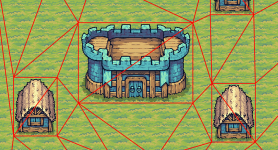
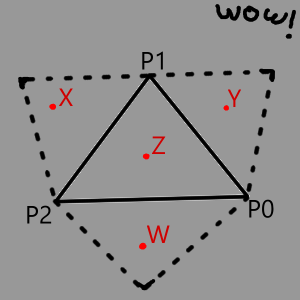
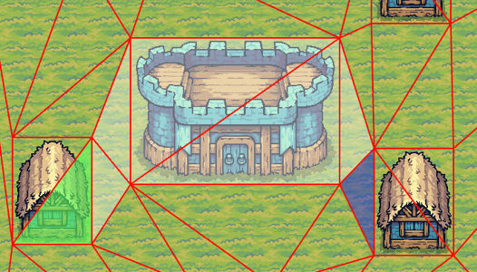
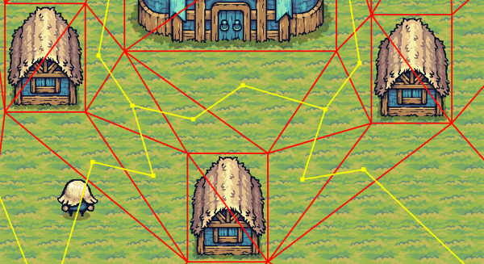
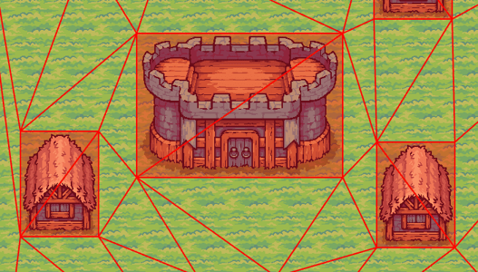
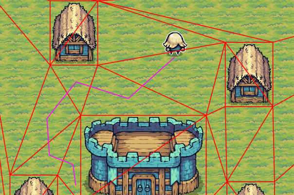
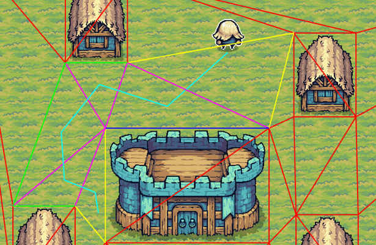
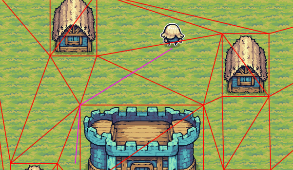
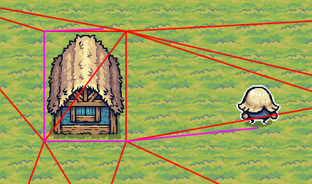
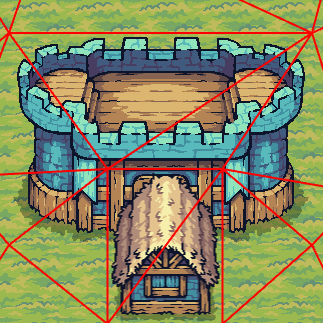

Pathfinding is complex. When using a off-the-shelf game engine (like Unity), this is not a problem people have to worry about. However, with a custom game engine, developing a pathfinding system is essential, and it needs to be coded (mostly) from scratch.
Good news, there are plenty of high quality articles online. Understanding the basics of pathfinding is just a few google search away.
Bad news, theory is different than practice, the more you move away from the simple stuff (like grid based pathfinding) the more fragmented the information becomes and the harder is becomes to piece everything together.
This is a interactive article explaining all the steps I've done to build my own 2D pathfinding utility, from building the navmesh, computing the optimal path using A-star, to generating the final path. Using Rust of course.
If your screen width is smaller than 1300 pixels, the interactive demo will be hidden by default. It is MUCH better to run it on a desktop.
The code for this demo is available on github HERE and all of the pathfinding logic is in THIS file
Controls
- Primary mouse click / single tap to select sprites, interact with the gui
- Secondary mouse click / double tap to move selected pawn
- Single finger drag to simulate a mouse move
- Middle mouse, Arrow Keys, or holding touch near the screen borders to pan the world
- [D] or [Toggle Demo] header label to toggle the demo visibility
- [R] or [Reset Demo] header label to reset the demo
Special thanks to:
- Red Blob Games: For the best A* Algorithm guide available online
- PixelFrog: For the amazing assets used in this article
- Delaunator: The great library that handles the Delaunay triangulation
- Delaunator-rs: The rust port of delaunator
- Simple stupid funnel algorithm: For the path smoothing algorithm
Using Delaunay triangulation to generate the base navmesh
The base of a navmesh is really just a mesh of interconnected polygons, in this case triangles. Navmesh generation is usually done through a "baking" step that takes 2D or 3D objects as inputs.
The best way to generate a navmesh is called Delaunay triangulation. Delaunay triangulation is cheap to compute and can easily process thousands of vertices in only a few ms, even on less powerful hardware. Moreover, you don't need to implement it from scratch; there are many libraries, in every language, ready to be used. Most of them are small, self contained, and REALLY optimized.
The Rust Delaunay triangulation crates are: delaunator, cdt, and spade. Spade has a document comparing the features between each of them. Of those three, spade is the most feature-rich.
In this demo, I'm using delaunator because it is the most simple. The source code consists of a single file with approximately 600 lines of code. However, this simplicity comes with limitations, as detailed in the Limitations & Steps Forward section.
Using delaunator, the generation is done by building a list of points (also called vertices), and the calling the triangulate function:
pub fn triangulate(points: &[Point]) -> Triangulation
When working with sprites, first add the limits of the world and then, for each sprite with collisions, add the bounding box coordinates. We're also saving the bounding boxes of each one of those sprites, we will need them to remove the unreachable nodes in the following steps.
In the "Generation" demo you can toggle the navmesh using the "Show navmesh" check box.
The code is HERE

Understanding the triangulation output
The output of the triangulation is a doubly connected edge list (also known as DCEL). It is defined as:
pub struct Triangulation {
/// A vector of point indices where each triple represents a Delaunay triangle.
/// All triangles are directed counter-clockwise.
pub triangles: Vec<usize>,
/// A vector of adjacent halfedge indices that allows traversing the triangulation graph.
///
/// `i`-th half-edge in the array corresponds to vertex `triangles[i]`
/// the half-edge is coming from. `halfedges[i]` is the index of a twin half-edge
/// in an adjacent triangle (or `EMPTY` for outer half-edges on the convex hull).
pub halfedges: Vec<usize>,
/// A vector of indices that reference points on the convex hull of the triangulation,
/// counter-clockwise.
pub hull: Vec<usize>,
}
The structure may initially appear confusing, but once you grasp three key concepts, it becomes significantly easier to understand.
#1. The edges. Edges are the building blocks of a DCEL. They are stored in the triangles Vec. Each
value in the vector is the starting point of an edge. As such:
triangulation.triangles.len()returns the number of edges in the triangulationtriangulation.triangles[0]returns, for edge #0, the index of the point in the original vertex vectorpoints[triangulation.triangles[0]]returns, for edge #0, the coordinates of the starting point (pointsbeing the original vector passed to the triangulate function)
#2. The triangles. Triangles are also stored in the triangles. Each triple of edges forms a triangle. As such:
triangulation.triangles.len() / 3returns the number of triangles in the triangulationtriangulation.triangles[0..3]defines the first triangleindex [0, 1]defines the start and end points of the first edgeindex [1, 2]defines the start and end points of the second edgeindex [2, 0]defines the start and end points of the third edge
#3 Moving from one triangle to one of its neighbor. A triangle can have up to three neighbors, so iterating over the triangles in
a linear fashion is not really helpful. That's where the halfedges comes to save the day. For an edge "X", indexing into the halfedges
returns the edge of the opposite triangle (or usize::Max if the edge points outside of the triangulation). As such:
triangulation.halfedges[0]returns the index of the neighbouring triangle edgetriangulation.triangles[triangulation.halfedges[0]]returns the index of the point of the neighbouring edgepoints[triangulation.triangles[triangulation.halfedges[0]]]returns the coordinates of the starting point of the neighbouring edge
For more details, delaunator has a more in depth guide on how the data structure works.
Lets put this knowledge into practice, and do one of the most simple operation you can do on a navmesh...
Mapping a point inside the navmesh
One of the most basic thing to query in a navmesh is in which triangle an point is located. Brute forcing is possible by looping over every triangle and check if the point is inside. However, thanks to how the navmesh is built, it is possible to query the information with much fewer instructions.
One of the attribute of our navmesh is that all the vertex of the triangles are generated in a counter-clockwise order. This allows us to check if a point is in a triangle, and if it is not, it also give us in which direction we should continue the search. All we have to do is compute
on which side of a line the point we are checking is. robust gives us the orient2d
function to do that.
Here's a, huh, "visual aid" to explain how that works

- Y is not cc to P0 and P1, therefore Y is most likely in
triangulation.halfedges[P0] - X is not cc to P1 and P2, therefore X is most likely in
triangulation.halfedges[P1] - W is not cc to P2 and P0, therefore W is most likely in
triangulation.halfedges[P2] - Z is cc to all edges, therefore Z is in the triangle
So starting from any triangle in the navmesh (triangle #0 is as good as any, provided your navmesh isn't too large), run the logic from above, and move from neighbor to neighbor until the 4th condition returns true.
To debug this feature. On the navigation tab, check "Debug Triangle lookup". The triangle_at function code is also available
HERE.

Generate a graph
The A* algorithm works on a graph, however a navmesh is not a graph. Building a pathfinding graph can be done using many different techniques, and you may not even need a navmesh! For this demo, I'm using the simplest method I could find: the navmesh triangles are the cells, and the cost to move between the cells is the distance between each triangle incenter. There is also a very good article by Red Blob games called map representation that goes deeper into the subject.
To debug the graph, go to the "pathfinding" tab and check the "show pathfinding graph" option.
Because working directly with the navmesh, with the multiple levels of indirection, is not very good for code readability or data locality, we can store more than just the distance between the nodes. Each field will be explained later, but for now, here's the data type of a node:
pub struct Triangle(u32);
struct NavNodeNeighbor {
pub center: PositionF32,
pub segment: [PositionF32; 2],
pub triangle: Triangle,
pub distance: f32,
}
struct NavNode {
pub triangle: Triangle,
pub center: PositionF32,
pub n0: NavNodeNeighbor,
pub n1: NavNodeNeighbor,
pub n2: NavNodeNeighbor,
pub disconnected: u32
}
The graph generate is done by looping over each triangle in the navmesh, querying the neighbors and storing the results in the NavNode struct.
The nodes are stored in a Vec<NavNode> that maps to the navmesh triangles.
The code is HERE.

Removing blocked nodes from the graph
Next we need to remove the blocked nodes from the graph. To detect which node is blocked, check if the center of a node is in the bounding box saved in step #1. The algorithm brute force it by checking each bounding box for each node in the graph. The scaling is a problem for future me.
Don't remove the nodes from the Vec, otherwise we lose the triangle->node mapping also, we may need to compute the path from inside a blocked node. Instead:
- Add a
disconnectedflag. If the node is blocked, set this flag to true - Lookup the neighbouring nodes. For each one of them, set the distance from that neighbouring node and the blocked node to infinity.
- The distance from the blocked node to its neighbor stays the same, so we know how to "leave" it from the inside.
Toggle blocked cell debugging in the navigation tab by checking "show blocked cells"
The code is HERE

Using A* to compute the optimal path between two cells
Rust has an implementation of the A* algorithm in the pathfinding crate. However, because the algorithm is simple enough to code, we have our own implementation.
Toggle pathfinding debugging in the pathfinding tab by checking "debug pathfinding" and select a pawn to see the "rough" computed path to your cursor location.
Also, while coding the algorithm is simple, explaining the logic behind the code should be a topic for a separate article. Several such articles already exist online. The best one I found is Implementation of A* by Red Blob Games.
Because of our graph, all the information needed to run the A* algorithm is already in the node. Each neighbor (n0, n1, n2) in the cell has the distance
to quickly add the new_cost to move to the node. And the center of the neighbor node can be used to compute the heuristic (neighbor.center.distance(end_point)).
The output of the algorithm is a Vec of segments (or "gates") the moving unit will have to go through. This will be needed to optimize the path in the following step.
Check this project implementation HERE

Optimizing the path using the Simple Stupid Funnel Algorithm
Next we need to optimize the final path. This is done using the Simple stupid funnel algorithm. As far as I'm aware, there are no libraries that implement the algorithm in Rust, so the project has its own implementation HERE.
Toggle funnel debugging in the pathfinding tab by checking "debug pathfinding funnel"

The algorithm takes the start point and the list of gates generated by the last step. The end point is also added as a "gate" before running it. It outputs a Vec of points the character will have to go through.
We start by setting the start point as the apex and proceeds by iteratively moving the funnel sides forward along the portal side points (green for right and blue for left in the debug view) as long as this tightens the funnel. This can be checked using the orient2d function from robust:
robust::orient2d(apex, right, new_right) <= 0.0robust::orient2d(apex, left, new_left) >= 0.0
When the funnel degenerates to a line segment, this means we reached an pivot point. In this case, the pivot must be set as the new apex and it must also be added to the points output. This is also checked using the orient2d function:
orient_point(apex, left, new_right) < 0.0orient_point(apex, new_left, right) < 0.0
Once you have the final point array, all that's left to do is send it to your game tasks system.
Toggle the optimal pathfinding in the pathfinding tab by checking "debug pathfinding (smoothed)"

Limitations & steps forward
This demo only features very basic pathfinding capabilities. Real world scenarios will usually require a few extra bells and whistles. Here's some of them.Suboptimal paths
Using triangle centers to compute the distance between nodes will return suboptimal results if some triangle are much larger than others. This can be fixed by adding extra vertices if we detect larger triangle during the triangulation step. Subdivided triangles will increase the cost of running the algorithm, so it is a tradeoff between accuracy and speed.

Broken edges
Delaunator will combine vertex that are very close to one another and superimposed sprites will generate a tesselation that won't match the "real" blocked area. If preserving edges is a must, constrained Delaunay triangulation must be used. Both cdt and spade supports it.

Moving multiple units
In this demo, we can only move one unit at a time. When moving multiple units, their final positions must be spread around the end point and sometime they may not event end up in the clicked cell.
Bounding box for units
In this demo, units have a size of 0. In a real scenario units will have a bounding box, and larger unit may be spread across multiple cells.
Terrain modifiers
A common feature in most game is different terrain type that infuence the characters speed. This is done by adding a modifier to the distance function between two nodes. Easily done in the generate graph step.
Doors and other "fun" features
However some features are not so easy to implement, like doors for example. In this case, pathfinding won't be a single call to a compute_path function, and may
require integration with other systems in your game engine.
Multithreading
Javascript / WASM is a single threaded environment (yes workers exists, but using them with web assembly is a monumental pain in the ass).
Assuming a real multithreaded environment, and a working task based system, you could easily distribute the pathfinding calls in a threadpool because all the dependencies to run the code is const.
pub fn compute_path(&self, start: PositionF32, end: PositionF32, output: &mut Vec<PositionF32>) -> bool { }